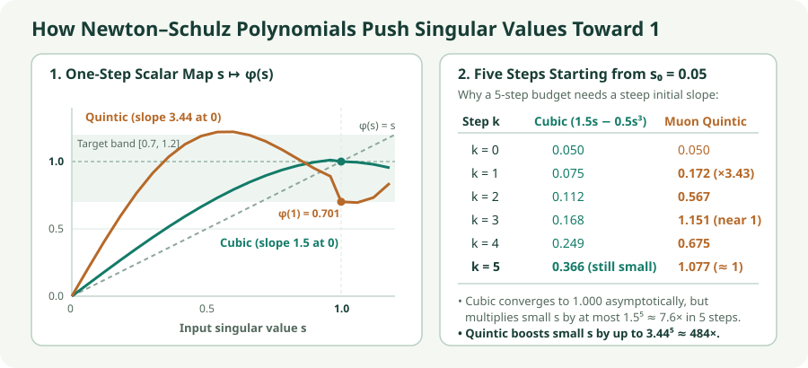

Muon, Part 2: Newton–Schulz Without the Mystery
How do you set every singular value of a matrix to $1$ without computing an SVD? Run $5$ steps of a simple matrix-multiply loop that pushes every $\sigma_i\in(0,1]$ up to $\approx 1$ in parallel.
Part 1 showed that Muon wants to turn a momentum matrix $M=U\Sigma V^\top$ into its orthogonal polar factor $Q=UV^\top$ by replacing every nonzero singular value $\sigma_i$ with $1$. Calling an exact SVD (`torch.linalg.svd`) on every weight matrix at every training step is slow on GPUs. Newton–Schulz iteration replaces SVD with $5$ fast `bfloat16` matrix multiplications that run directly on GPU Tensor Cores.
bfloat16.1. Step 0: Divide by $\|M\|_F$ so all singular values start in $[0,1]$
Before running the polynomial loop, Muon divides the momentum matrix $M$ by its Frobenius norm $\|M\|_F$:
Why is this single division enough? Because no individual singular value $\sigma_i$ can exceed the square root of the sum of all squared singular values ($\sigma_i\le\sqrt{\sum_{j=1}^r\sigma_j^2}=\|M\|_F$). Dividing by $\|M\|_F$ guarantees that every singular value of $X_0$ starts between $0$ and $1$:
Polynomials with powers like $s^3$ and $s^5$ only behave well inside $[0,1]$. If a singular value started above $1$, raising it to the 3rd and 5th power repeatedly would make it explode to $\pm\infty$.
2. The key insight: why odd matrix products only change $\Sigma$
How can we change the singular values $\Sigma$ of a matrix $X=U\Sigma V^\top$ without ever computing $U$ or $V$? Look at what happens when we multiply $X$, $X^\top$, and $X$ together. Because $U$ and $V$ have perpendicular unit columns ($V^\top V=I$ and $U^\top U=I$), the inner matrices cancel out like dominoes:
Notice what happened: $U$ and $V^\top$ stay completely untouched on the outside, while the diagonal matrix $\Sigma$ in the middle gets raised to odd powers ($\Sigma^3$, $\Sigma^5$). Therefore, combining $X$, $(XX^\top)X$, and $(XX^\top)^2 X$ applies an ordinary 1D polynomial $\phi(s)=as+bs^3+cs^5$ to every singular value $s=\sigma_i$ at the exact same time:
This turns the entire matrix problem into a simple 1D question: choose a curve $\phi(s)$ that pushes any number $s\in(0,1]$ up to $1$ in as few steps as possible!
3. Where the classical cubic $\phi(s)=\tfrac32 s-\tfrac12 s^3$ comes from
Since Section 2 showed that any odd matrix polynomial acts on each singular value $s$ one number at a time, let’s derive the formula on a single number $s\in(0,1]$ first, and then write it in matrix form:
1. The exact goal (why $(XX^\top)^{-1/2}X = UV^\top$ and $QQ^\top = I$): Watch the transpose carefully on $X=U\Sigma V^\top$ (with rows $\le$ cols so $V^\top V=I$ and $UU^\top=I$). In $XX^\top$, the inner $V^\top V=I$ cancels, leaving $U$ and $U^\top$ on the outside—so $XX^\top = U\Sigma^2 U^\top$ (not $U\Sigma^2 V^\top$!). Taking its inverse square root $(XX^\top)^{-1/2}=U\Sigma^{-1}U^\top$ and multiplying by $X$ cancels $\Sigma$ to give $Q=UV^\top$ (note that $Q=UV^\top$ itself is not $I$, but $QQ^\top = UV^\top V U^\top = UU^\top = I$):
2. Avoid the square root via the Taylor expansion of $f(e)=(1-e)^{-1/2}$: Since our target has $QQ^\top=I$, measure how far $XX^\top=U\Sigma^2 U^\top$ is from $I=UU^\top$ via the error $E=I-XX^\top=U(I-\Sigma^2)U^\top$, or on each singular value $e=1-s^2$ (so $s^2=1-e$). Around $e=0$, the Taylor series $f(e)=f(0)+f'(0)e+\tfrac12 f''(0)e^2+\cdots$ has $f(0)=1$ and $f'(e)=-\tfrac12(1-e)^{-3/2}(-1)\implies f'(0)=+\tfrac12$:
3. Substitute Step 2 into Step 1—and why we need a loop when $X_0 X_0^\top$ is nowhere near $I$: At step $0$, small singular values ($s_0\ll 1$) make $X_0 X_0^\top=U\Sigma_0^2 U^\top$ nowhere near $I$ ($e_0=1-s_0^2\approx 1$, not $0$). That is why one Taylor step does not jump straight to $UV^\top$! Instead, for any $s_k\in(0,1)$, the multiplier $1+\tfrac12(1-s_k^2)\in(1,1.5)$ is strictly greater than $1$, so each step pushes $s_{k+1}$ closer to $1$—shrinking $E_k=U(I-\Sigma_k^2)U^\top\to 0$ and driving $X_k X_k^\top\to I$ over multiple iterations:
4. Why Muon upgrades to a tuned 5-step quintic
Why doesn’t Muon just use the classical cubic? When a large weight matrix has hundreds of singular values, dividing by $\|M\|_F=\sqrt{\sum_j\sigma_j^2}$ makes the smaller singular values very close to zero ($s_0\ll 1$). Near $s=0$, $s^3$ is negligible, so the cubic curve $\phi_{\text{cubic}}(s)\approx 1.5s$ only multiplies a small singular value by $1.5\times$ per step—at most $1.5^5\approx 7.6\times$ across $5$ steps.
To lift quiet singular directions much faster, Muon adds a degree-$5$ term $A_k^2 X_k$ with tuned coefficients $(a,b,c)=(3.4445,-4.7750,2.0315)$:

| Method | 1D Scalar Map $\phi(s)$ | Boost Slope Near $s=0$ | Max 5-Step Boost | Behavior Near $s=1$ |
|---|---|---|---|---|
| Exact SVD | $s \mapsto 1$ (in 1 step) | $\infty$ (exact step) | Exact $1.000$ | Exact $1.000$, but slow on GPU Tensor Cores. |
| Classical Cubic NS | $1.5s - 0.5s^3$ | $1.5\times$ per step | $1.5^5 \approx 7.6\times$ | Converges smoothly to $1.000$, but too slow for tiny $s_0$. |
| Muon Quintic NS | $3.4445s - 4.7750s^3 + 2.0315s^5$ | $3.4445\times$ per step | $3.4445^5 \approx 484\times$ | Trades exact convergence for speed; stays inside $[0.7, 1.2]$. |
The engineering trade-off: Notice in the plot that the orange quintic curve wiggles inside $[0.7,1.2]$ rather than sitting flat at $1.000$. In noisy mini-batch training using `bfloat16`, lifting weak singular values by up to $484\times$ into $[0.7,1.2]$ in just $5$ steps is far more valuable than spending $20+$ steps chasing extra decimal places.
5. Lab: follow both singular values
Start from a $2\times 2$ matrix with adjustable singular values $(s_1,s_2)$ below. Each step runs the actual matrix multiplication and plots how both singular values move toward $1$.
Inside one Muon matrix transform
Choose an iteration budget, then click Play or Step to watch the ellipse become a circle as both singular values approach $1$.
- Compare 5 iterations on $(3, 0.03)$: after Frobenius normalization, the smaller singular value starts near $0.01$; switch between Muon quintic and Classical cubic to see how much faster the quintic lifts the orange curve toward $1$.
- Compare 20 iterations: the cubic settles at $(1,1)$, whereas the quintic oscillates inside $[0.7,1.2]$ because it is designed specifically for a fast $5$-step budget.
- Turn off normalization: with $s_1=3>1$, the $+2.0315s^5$ term explodes immediately—showing why Step 0 ($M/\|M\|_F$) is mandatory.
6. Code to equation: how each line builds the 3rd-order and 5th-order polynomials
First, notice why both implementations transpose tall matrices ($m>n$) at the start: because $(X_k X_k^\top)X_k=X_k(X_k^\top X_k)$, ensuring $\text{rows}\le\text{cols}$ guarantees that $\texttt{A = X @ X.T}$ always has the smaller shape $\min(m,n)\times\min(m,n)$ (e.g., $1024\times 1024$ instead of $4096\times 4096$).
1. 3rd-order (cubic) Newton–Schulz: $\phi_3(s)=1.5s-0.5s^3$
def newton_schulz_3(G, steps=15, eps=1e-7):
X = G.bfloat16()
if G.size(0) > G.size(1):
X = X.T # Ensure rows <= cols so A is small
X = X / (X.norm() + eps) # Step 0: scale all singular values into [0, 1]
for _ in range(steps):
A = X @ X.T # Line 1: forms s^2
X = 1.5 * X - 0.5 * (A @ X) # Line 2: combines s^1 and s^3
if G.size(0) > G.size(1):
X = X.T
return XStarting from $X_k=U\Sigma_k V^\top$ (with singular values $s$), here is how each step inside the `newton_schulz_3` loop builds the cubic equation:
2. Muon’s 5th-order (quintic) Newton–Schulz: $\phi_5(s)=as+bs^3+cs^5$
def newton_schulz_5(G, steps=5, eps=1e-7):
a, b, c = (3.4445, -4.7750, 2.0315)
X = G.bfloat16()
if G.size(0) > G.size(1):
X = X.T # Ensure rows <= cols so A is small
X = X / (X.norm() + eps) # Step 0: scale all singular values into [0, 1]
for _ in range(steps): # 5 fast bfloat16 Tensor Core iterations
A = X @ X.T # Line 1: forms s^2
B = b * A + c * (A @ A) # Line 2: combines b*s^2 + c*s^4
X = a * X + B @ X # Line 3: a*s + (b*s^2 + c*s^4)*s = a*s + b*s^3 + c*s^5
if G.size(0) > G.size(1):
X = X.T # Restore original (m, n) shape
return XHere is how each step inside the `newton_schulz_5` loop builds the 5th-order equation using only $3$ matrix multiplications ($\texttt{X @ X.T}$, $\texttt{A @ A}$, and $\texttt{B @ X}$):
7. Questions worth answering
No. “Newton” here refers only to finding the root $s=1$ of $s^2-1=0$ for the singular values of the momentum matrix $M_t$. Muon only ever uses standard first-order backpropagated gradients.
Two reasons: (1) for a rectangular matrix $X\in\mathbb R^{m\times n}$, $X^2$ does not even exist because the inner dimensions $m$ and $n$ don’t match—only alternating odd products like $X(X^\top X)^k\in\mathbb R^{m\times n}$ preserve the shape of $X$; and (2) odd powers preserve the sign/orientation of every singular direction.
Because $\phi(0)=a(0)+b(0)^3+c(0)^5=0$, any zero singular value stays strictly $0$ at every step rather than amplifying noise.
Sources
Higham, Computing the Polar Decomposition—with Applications; Keller Jordan, Muon: An optimizer for hidden layers in neural networks; Muon reference implementation.